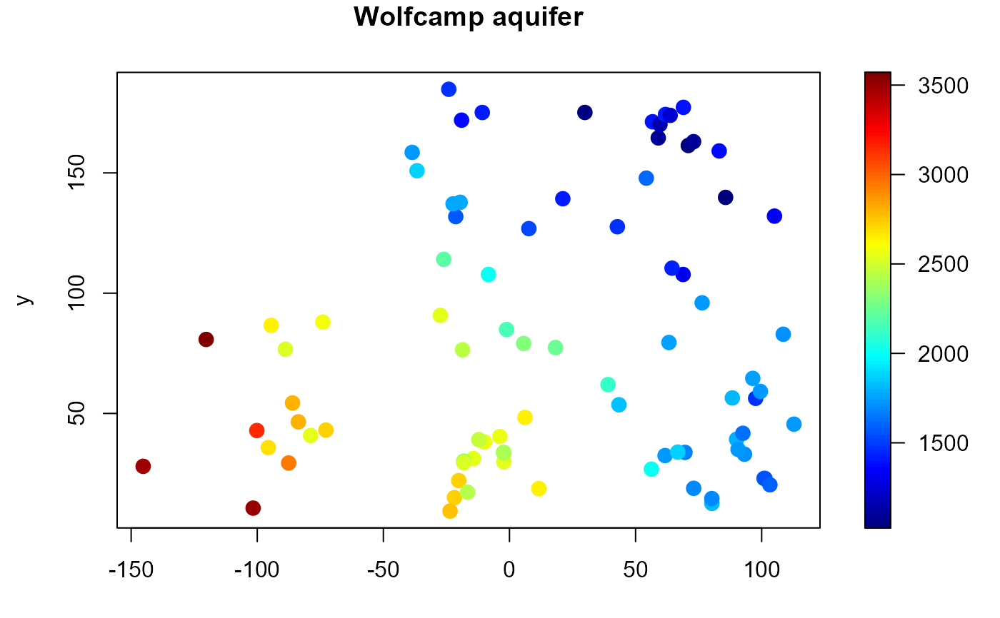

The Deaf Smith County (Texas, bordering New Mexico) was selected as an alternate site for a possible nuclear waste disposal repository in the 1980s. This site was later dropped on grounds of contamination of the aquifer, the source of much of the water supply for west Texas. In a study conducted by the U.S. Department of Energy, piezometric-head data were obtained at 85 locations (irregularly scattered over the Texas panhandle) by drilling a narrow pipe through the aquifer.
This data set has been used in numerous papers. For instance, Cressie (1989) lists the data and uses it to illustrate kriging, and Cressie (1993, section 4.1) gives a detailed description of the data and results of different geostatistical analyses.
A data frame with 85 observations on the following 3 variables:
relative longitude position (miles).
relative latitude position (miles).
piezometric-head levels (feet above sea level).
Harper, W.V. and Furr, J.M. (1986) Geostatistical analysis of potentiometric data in the Wolfcamp Aquifer of the Palo Duro Basin, Texas. Technical Report BMI/ONWI-587, Bettelle Memorial Institute, Columbus, OH.
Cressie, N. (1989) Geostatistics. The American Statistician, 43, 197-202.
Cressie, N. (1993) Statistics for Spatial Data. New York. Wiley.
str(aquifer)#> 'data.frame': 85 obs. of 3 variables: #> $ lon : num 42.78 -27.4 -1.16 -18.62 96.47 ... #> $ lat : num 127.6 90.8 84.9 76.5 64.6 ... #> $ head: num 1464 2553 2158 2455 1756 ...summary(aquifer)#> lon lat head #> Min. :-145.24 Min. : 9.414 Min. :1024 #> 1st Qu.: -21.30 1st Qu.: 33.682 1st Qu.:1548 #> Median : 11.66 Median : 59.158 Median :1797 #> Mean : 16.89 Mean : 79.356 Mean :2002 #> 3rd Qu.: 70.90 3rd Qu.:131.825 3rd Qu.:2540 #> Max. : 112.80 Max. :184.766 Max. :3571